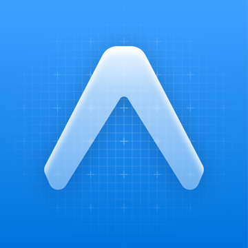
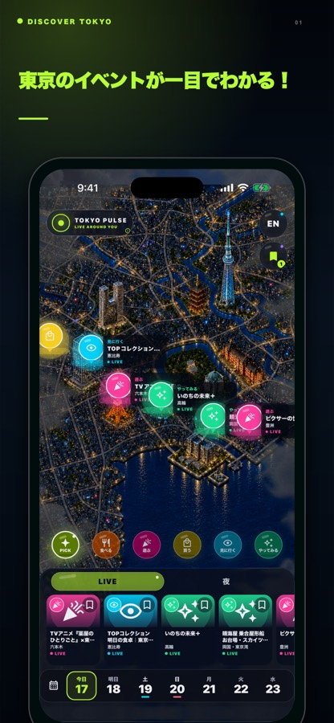
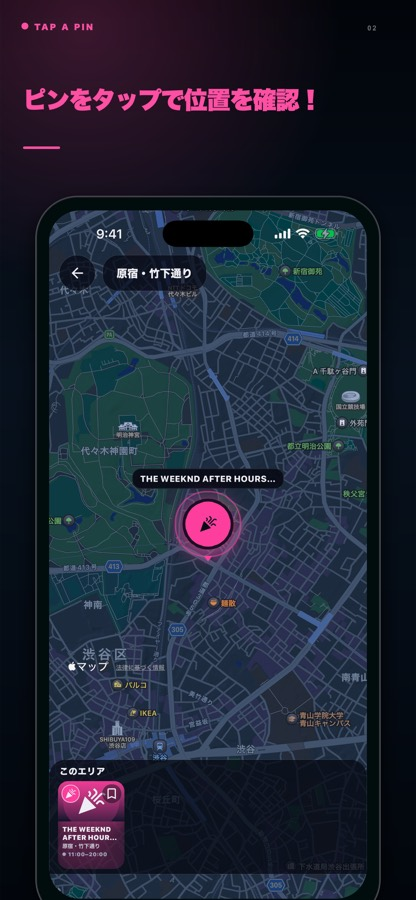
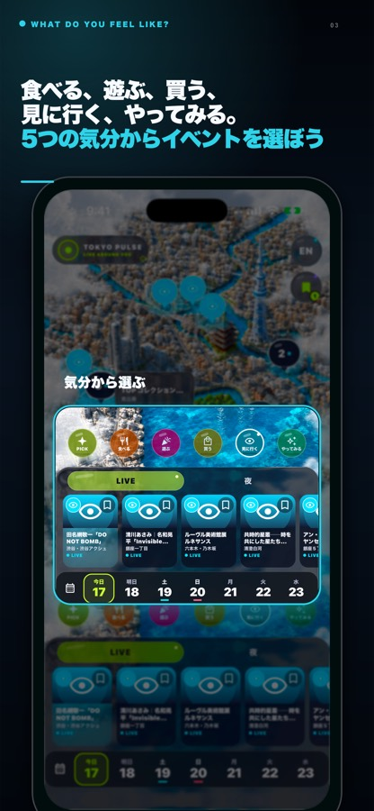
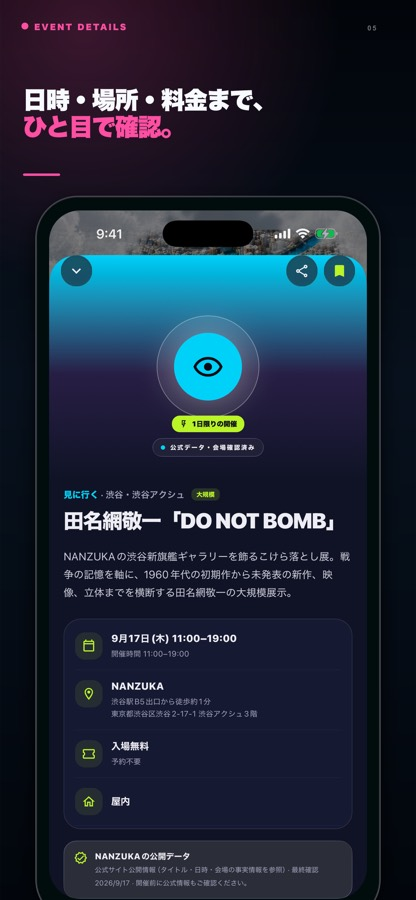

TOKYO PULSE
予定が白紙の日に。
今日の東京の「なんか楽しそう」を地図で。
東京23区で開催中のイベントが、地図の上のピンになって見つかります。
App Storeで入手無料・登録なし・iPhone 開かないときは、こちらからApp StoreへTikTokやInstagramの中では、App Storeが開かないことがあります。右上の「…」から「ブラウザで開く」を選ぶか、してSafariに貼り付けてください。




- 地図から見つける気になるピンをタップするだけ。概要も経路もすぐ分かります。
- 「いつ」と「なにする？」で探す日付と、昼か夜か、気分で絞り込めます。
- 今日しかないものその日だけの催しを、いちばん上に出します。